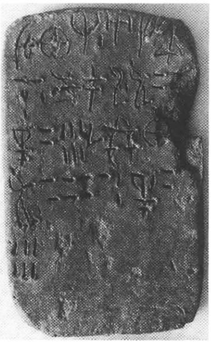
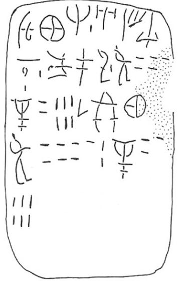

-
PE1
Names
Aliases for the inscription.
PE1, PE 1
Support
Type of Object.
Tablet
Location
Site where object was found.
Petras
Findspot
Location at Site.
Unavailable


# "Row Index", "Line Index", "Word Index", "Syllabogram", "Status of Reading"
# R L W I S
# 1 0 1 PA certain
1 1 0 U none
1 1 0 KA none
1 1 0 RE none
1 1 0 A none
1 1 0 SE none
1 1 0 SI none
2 1 0 NA none
2 2 1 KU none
2 2 1 PA none
2 2 1 RI none
2 2 2 VIR+[?] none
2 2 3 50 none
3 3 4 GRA+PA none
3 3 5 20 none
3 3 5 6 none
3 3 6 ¹⁄₂ none
3 4 7 E none
3 4 7 KA none
4 4 8 VIR+[?] none
4 4 9 70 none
4 4 9 2 none
4 5 10 GRA+PA none
4 5 11 30 none
5 5 11 6 none
Scribe
Writer of Inscription.
Unavailable
Context
Approximate Date of Inscription.
Unavailable
Dimensions
Height x Length x Thickness.
Catalogue
Museum Reference Number.
Readings
Linear A Transcription
A Linear A transcription with words parsed separately.
Line breaks match the inscription.
𐘉𐘾𐘙𐘇𐘈𐘤
𐘅𐙂𐘂𐘭𐙇𐄔
𐛭𐄑𐄌𐝆𐘡𐘾
𐙇𐄖𐄈𐛭𐄒
𐄌
ASCII Transcription
An ASCII transcription with words parsed separately.
Line breaks match the inscription.
UKAREASESI
NAKUPARIVIR+[?]50
GRA+PA206¹⁄₂EKA
VIR+[?]702GRA+PA30
6
Linear A Tabulation
A Linear A transcription with words parsed separately.
Line breaks are logical, e.g. to represent a list.
𐘉𐘾𐘙𐘇𐘈𐘤𐘅
𐙂𐘂𐘭𐙇𐄔
𐛭𐄑𐄌𐝆
𐘡𐘾𐙇𐄖𐄈
𐛭𐄒𐄌
ASCII Tabulation
An ASCII transcription with words parsed separately.
Line breaks are logical, e.g. to represent a list.
UKAREASESINA
KUPARIVIR+[?]50
GRA+PA206¹⁄₂
EKAVIR+[?]702
GRA+PA306
Commentaries
PE 1
(Siteia Mus. 6606; Tsipopoulou & Hallager 1996:
25-30),
found in a mixed deposit. The tablet is pierced
in the middle of line 3; on bottom rim, small holes.
JGY: people+food
|
side.line
|
statement
|
logogram
|
number
|
fraction
|
|
.1-2
|
U-KA-RE A-SE-SI-NA
|
|
|
|
|
.2
|
KU-PA-RI
|
VIR
|
5
0
[
|
|
|
.3
|
|
GRA+PA {*574}
|
26
|
J
|
|
.3-4
|
E-KA[
|
VIR
|
72
|
|
|
.4-5
|
|
GRA+PA {*574}
|
3
6
|
|
|
.6
|
vacat
|
|
|
|
as
GRA+PA {*574}
3
6 (the 3rd 10 is to be
restored in the slightly
abraided
area to the right) is half of VIR
72
, so .2-3: GRA+PA {*574} 26 J
(26
1/2) is half of VIR
53
(to be
restored).
Schoep 2002, 107: a list of rations of GRA+PA {*574}/person; the
amounts of 1/2 unit per person is twice the monthly ration that
women in Linear B get (T2 or 24 liters) and 4 times what a child
gets (T1); cf. HT 108
Commentary © John Younger
References